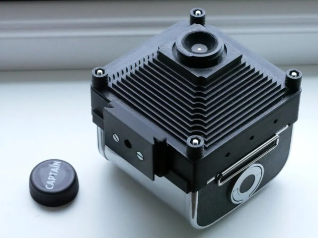

Make/Hasselblad Film Magazine Mount

3D PRINT / FILM MAGAZINE
Hasselblad
Film Magazine Mount
Two ways of seeing. One roll of film.
A compact, interchangeable front for an older Hasselblad C12/C16 magazine—made to use the magazine on its own, with a pinhole or another optical element.
It adds a different way of making photographs without replacing the original camera.
Model, STL files and documentation ↗Why this object?
The older Hasselblad magazine is already a self-contained, well-made mechanism, with a winding knob and a frame inspection window. I wanted to use those qualities rather than start with another camera body.
A pinhole exposure can sit on the same roll as photographs made with a Planar lens. The magazine remains the common element; the front changes how it sees.
INTERFACEHasselblad C12/C16 magazine
CONSTRUCTION3D-printed parts / PETG
FRONTSPinhole / Holga / Pentax 67 / lens board
MODEL REFERENCEPrintables 247783